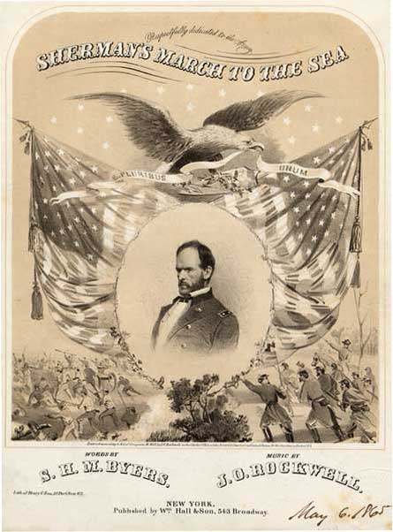

|
Sherman's March through Georgia, commonly referred to as
the "March to the Sea," began in Atlanta in November 1864
and culminated in the capture of Savannah on December 21st
before the troops continued toward South Carolina. During
this campaign, Union General William Tecumseh Sherman and

Maj. Gen. William T. Sherman
|
his force of 60,000 soldiers marched across Georgia, living
off the land and terrorizing Southern civilians. The path
taken by these men was scattered with evidence of their
presence--railroad ties twisted around trees, burned houses
and crops, and trampled countryside.
After a four month long campaign to capture Atlanta,
Georgia, the city was evacuated by Confederate forces on
September 1, 1864. Sherman and his troops took control of
the city on September 2nd. Sherman allowed the Southern
troops to escape and focused his energy on the city. In
establishing Atlanta as a command post for Union operations,
Sherman issued Special Field Orders No. 67 on September 8,
1864. These orders called for the evacuation of Atlanta's
more than 1,500 civilians. Despite vehement protests from
Southern officials and civilians, Sherman insisted that this
evacuation was necessary for the Union's military
operations. In addition, he did not want to be burdened
with the protection and care of a hostile civilian
population.
After several unsuccessful attempts to destroy General
John Bell Hood's Confederate forces, Sherman determined that
the Union's best interests would be served by marching his
troops across Georgia to demonstrate the power of the
Federal Army. Sherman further proposed cutting off his own
supply and communication lines and living off the
countryside as he and his troops marched through Georgia.
This would allow him to pursue the devastation of the
Southern countryside without worrying about protecting
railroads and supply trains. Sherman wanted to "make
Georgia howl" and to crush the Confederate civilian
population's morale. Sherman received permission to proceed.
Before their departure from Atlanta on November 15, 1864,
Sherman and his troops burned everything of military
importance in the city--depots, shops, factories, and
foundries. According to Union reports, only war-related
businesses and factories were destroyed by fire. However,
Southern reports blamed widespread destruction of homes and
personal property on Sherman's troops. Such destruction,
which likely occurred in Atlanta, would continue as Union
troops made their way through Georgia. Leaving Generals
George H. Thomas and John M. Schofield with 60,000 Union
soldiers to deal with Hood's troops in Tennessee, Sherman's
troops began their March to the Sea to crush civilian and
material support for the Confederacy.
To effectively forage, destroy, and demoralize the
Georgia countryside, Sherman divided his troops into two
wings, a left (northern) wing commanded by Henry W. Slocum
and a right (southern) wing under Oliver O. Howard's
command. Although the officers and soldiers began the 285
mile march toward Savannah with little knowledge of the
plan, they confidently moved forward at Sherman's command.
The route through a rich agricultural area of Georgia
offered fertile opportunity for good eating and good spirits
amongst the soldiers. In another tactical measure, Sherman
spread his troops across a sixty mile path to give the

Soldiers in Sherman's command
destroy railroad tracks in Atlanta.
|
Confederates the impression that they were heading for
multiple places--Macon, Augusta, or Savannah. This allowed
the Union forces to keep the Confederate troops spread
thinly and prevented high casualties. Although there were
several skirmishes as Sherman and his troops marched to the
sea, Union casualties for the entire campaign numbered only
2,200. Union forces easily captured Milledgeville,
Georgia's state capital, on November 23rd.
Sherman's troops marched from ten to fifteen miles each
day, foraging and destroying Confederate property along the
way. Reports describe a sixty mile wide swath of
destruction. This, Union troops hoped, would destroy the
material and moral support for the Southern war effort and
bring the war to a close. Often, Union soldiers ate what
they could and then destroyed whatever was left in order to
keep excess supplies away from Confederate soldiers and
civilians. In addition, they targeted and destroyed
railroads, mills, and other places or items that supported
the Confederate war effort. The Union troops became famous
for their heating and twisting of railroad ties into
"Sherman's neckties."
Although Sherman designated a specific group of men as
foragers for the troops, the main columns and individual
soldiers also searched for their own food and other spoils
of war. "Sherman's Bummers," the official foragers, often
seized personal property as souvenirs of their service.
Women's clothes, letters, linens, jewelry, silver, household
furnishings, and dishes often became the spoils of war for
Union soldiers. Some of these treasures were sent home to
loved ones in the North while others were dropped on the
roadside as the march continued. Although Sherman
officially opposed the wholesale plunder of Southern
property, he rarely punished offenders and applauded the
effects destruction had on the Southern civilian population.
Sherman's soldiers also freed the slaves that they
encountered on Georgia plantations and destroyed the
trappings of slavery, such as cotton gins, plantation
houses, and agricultural equipment. Many Southern blacks
followed the Union troops, hoping to gain their freedom in
the ranks of the Union Army. Some served as spies for
Sherman's Army. Others cheered as the Union troops passed
by. Although some officers were kind to the escaped slaves
who followed the Army, others allowed prejudiced attitudes
to govern their actions. A tragic incident occurred on
December 9th, when Union General Jeff C. Davis and his
troops crossed Ebenezer Creek, closely followed by
Confederate troops. Davis' Fourteenth Corps, followed by
black escapees, crossed the creek on a pontoon bridge and
then quickly removed the bridge before the runaway slaves
could do the same. Fearful of the repercussions they would
face at the hands of General Joseph Wheeler's Confederate
cavalry for supporting the Union, the escaped slaves tried
to cross the creek without a bridge. Many drowned or were
captured by Southern troops. Neither Sherman nor Davis took
responsibility for this tragedy.
The small opposition faced by the Union troops as they
marched through Georgia consisted of approximately 8,000
Confederate soldiers in Joseph Wheeler's cavalry corps and
Gustavus W. Smith's Georgia militia. William J. Hardee took
control of Confederate troops in Georgia on November 17,
1864, but could not stop Sherman's progress through the
state. Acknowledging this inability, Hardee focused his
energy and forces on the protection of the shipping town of
Savannah. Sherman and his troops cut through most of
Georgia by December 10th and Sherman demanded the surrender
of Savannah on December 17, 1864. When Hardee refused, the
|

Sherman's March was greeted with much
enthusiasm in the North, including a number of popular songs.
|
Union forces began a siege of the city, while leaving
Confederate troops free to evacuate it. Hardee and his
force of approximately 10,000 men abandoned Savannah on
December 21st, escaping across the river in to South
Carolina. Sherman and his men took control of the city and
its two hundred artillery pieces, ammunition, and
approximately thirty thousand bales of cotton. On December
22, 1864, Sherman sent Abraham Lincoln a telegram, offering
Savannah to the President as a Christmas present.
Once in control of Savannah, Sherman set about
demonstrating to the city's residents that peaceful
surrender and return to the Union would protect Southerners
from Union wrath. To contrast his treatment of residents in
Savannah to that of rebellious Atlantans, Sherman opened his
headquarters to whomever wanted to visit. He also allowed
the local government to continue functioning and made sure
that food came in to the city to feed the residents.
However, despite his attempts at reconciliation with those
in occupied Savannah, Sherman noted that the Southern girls
still "[talked] as defiant as ever" to their captors.
From Savannah, Sherman issued Special Field Orders, No.
15 on January 16, 1865, granting freedpeople full control of
the sea islands as well as coastal land thirty miles inland
from Charleston to Jacksonville. Sherman and his troops
left Savannah on February 1, 1865 and began marching toward
Columbia and Charleston, South Carolina.
Source: Joan Waugh, ed., Facts on File Encyclopedia of American
History: Civil War and Reconstruction, 1856 to 1869 (New York: Facts on
File, 2003), 321-323.
|